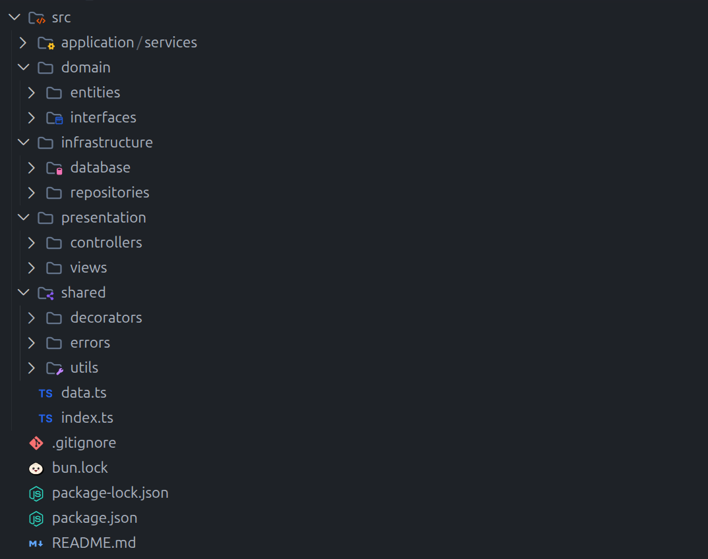
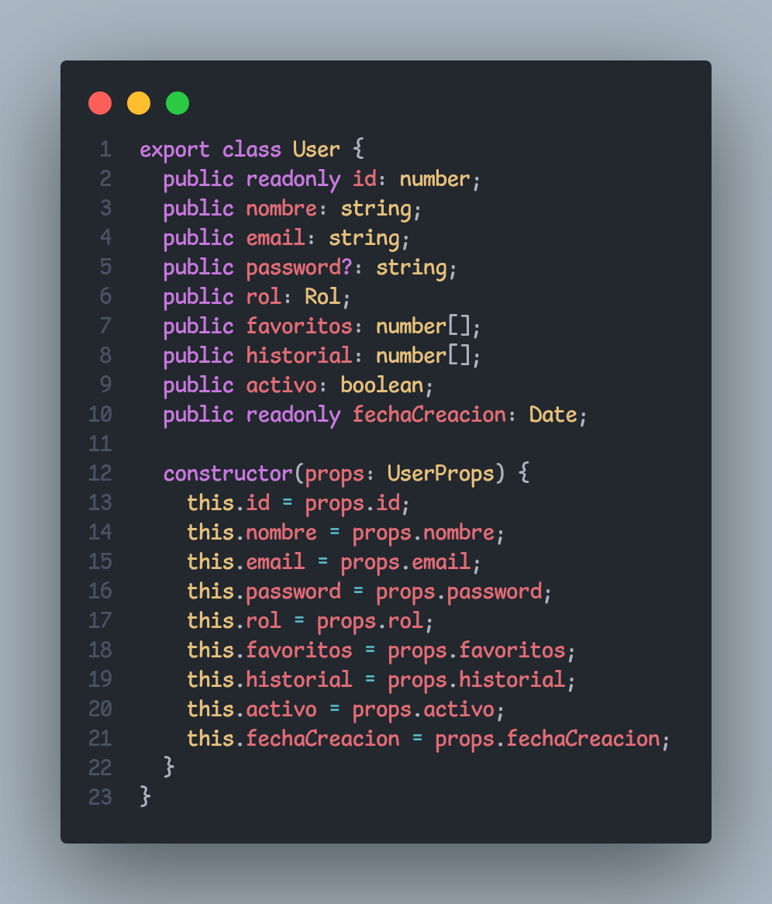
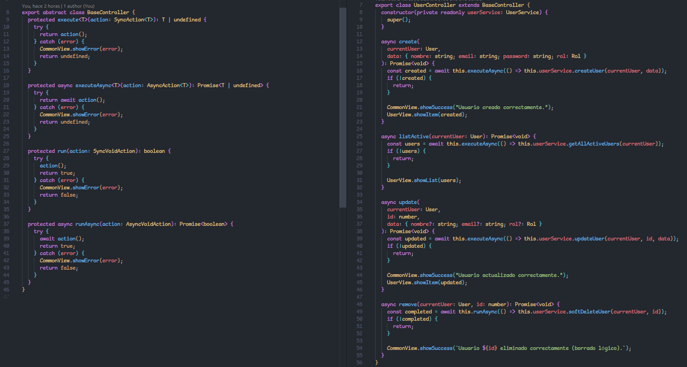
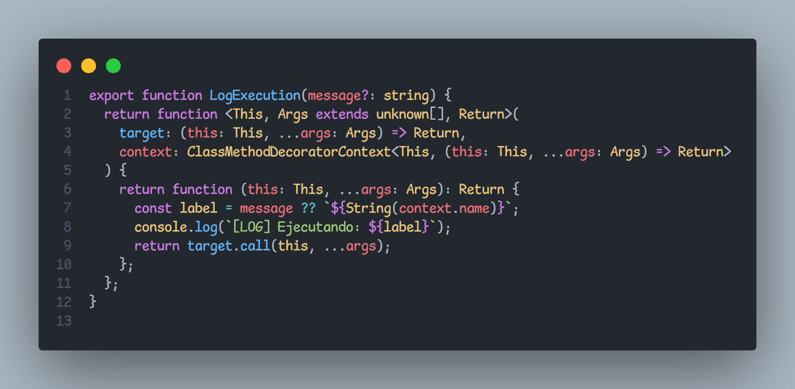
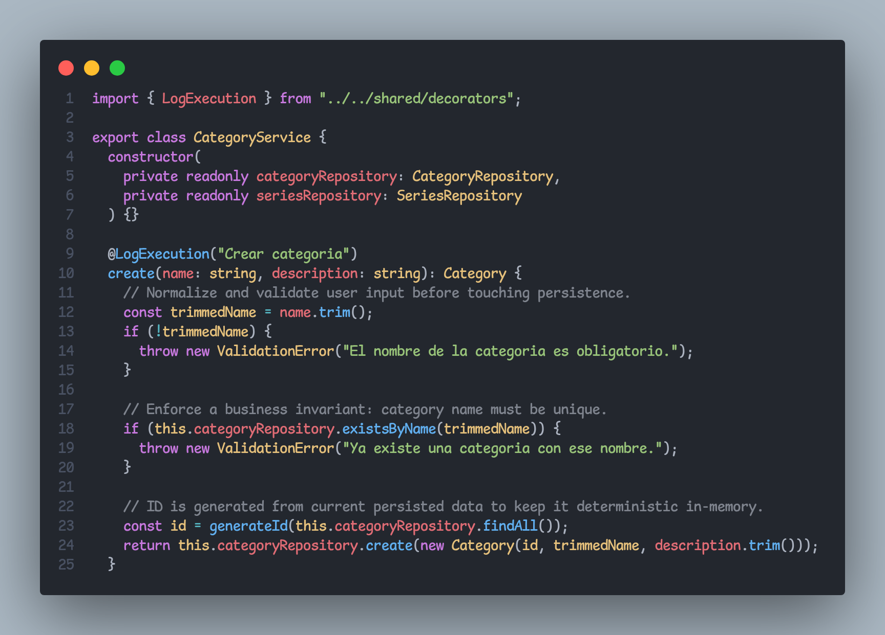
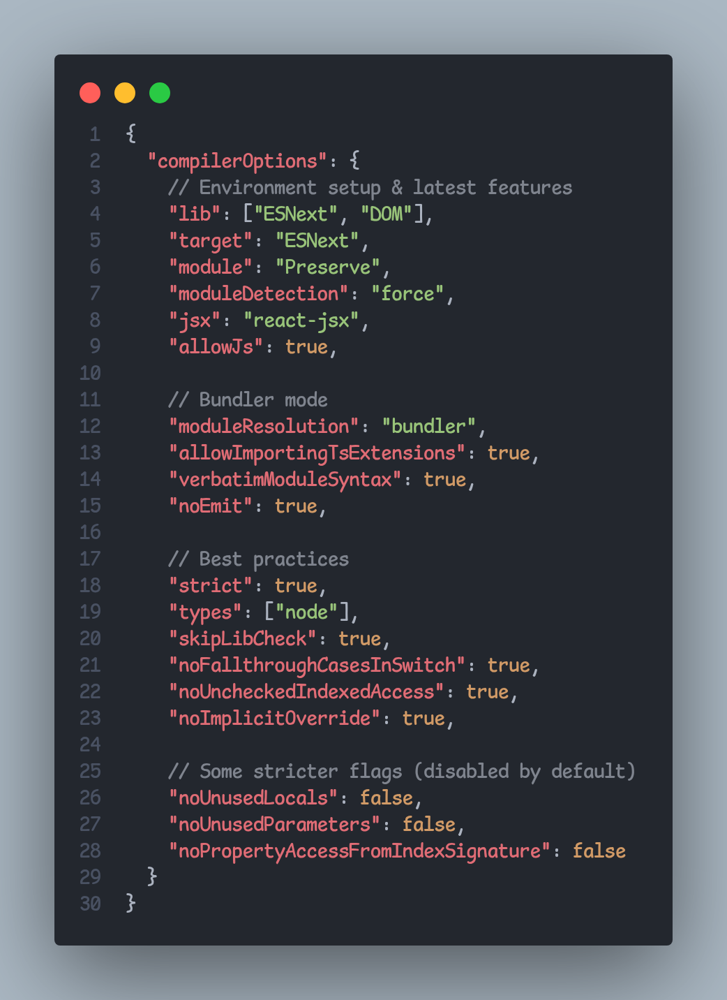

Capas
domain: entidadesapplication: reglas de negocioinfrastructure: tablas en memoriapresentation: controllers + views CLIshared: decoradores, errores y utils

docs/presentacion/assets/crunchyroll-logo.png
Presentacion tecnica
Presentado por la celula Kernel: una app inspirada en Crunchyroll para gestionar Users, Categories y Series. El objetivo no fue solo que corra, sino que sea explicable, mantenible y bien tipada.
01
domain: entidadesapplication: reglas de negocioinfrastructure: tablas en memoriapresentation: controllers + views CLIshared: decoradores, errores y utilspresentation -> applicationapplication -> domain + infrastructure/databaseshared transversalEstructura real del proyecto

docs/presentacion/assets/evidencias/01-arquitectura-src.png
Sugerencia: captura el arbol de carpetas en el explorador del IDE.
02
CRUD admin de usuarios, validaciones de email, permisos y borrado logico.
Archivos clave
domain/entities/User.tsapplication/services/UserService.tsdata.tscontrollers/UserController.tsCRUD, filtros, integridad category-series y bloqueo de eliminacion invalida.
Archivos clave
CategoryService.tsSeriesService.tsinfrastructure/database/inMemoryDb.tscontrollers/CategoryController.ts03
public, private, protectedextendsUserProps)readonlyimport/exportmoduleResolution: "bundler"src/domain/entities/User.ts

docs/presentacion/assets/evidencias/02-user-class-readonly.png
Sugerencia: mostrar public readonly id y
public readonly fechaCreacion.
src/presentation/controllers/BaseController.ts

docs/presentacion/assets/evidencias/03-extends-abstract-controller.png
Sugerencia: incluir abstract class BaseController y
UserController extends BaseController.
04
src/shared/decorators/LogExecution.ts

docs/presentacion/assets/evidencias/04-decorator-definition.png
Sugerencia: mostrar la funcion LogExecution completa.
src/application/services/*.ts

docs/presentacion/assets/evidencias/05-decorator-usage-services.png
Sugerencia: capturar @LogExecution("Crear categoria") en
CategoryService.
05
| Requisito | Estado | Donde se ve |
|---|---|---|
Arquitectura modular en src/ |
Cumplido | domain/application/infrastructure/presentation/shared |
| Clases TypeScript para entidades | Cumplido | domain/entities/*.ts |
| Al menos un decorador | Cumplido | @LogExecution en servicios |
| Tipado estricto, cero any | Cumplido | tsconfig.json strict: true |
| CRUD completo (Create, Read, Update, Delete) | Cumplido | Menu CLI por secciones en src/index.ts + services por dominio |
| Control por rol en CLI | Cumplido | Seleccion de sesion al inicio + opciones 12-15 solo ADMIN |
| Separacion de responsabilidades | Cumplido | Controllers delgados, reglas en services |
| Dominio | Create | Read | Update | Delete | Service | Controller | Menu |
|---|---|---|---|---|---|---|---|
| Users | createUser |
getAllActiveUsers |
updateUser |
softDeleteUser |
UserService.ts |
UserController.ts |
12,13,14,15 (solo ADMIN) |
| Categories | create |
findAll, findById |
update |
remove |
CategoryService.ts |
CategoryController.ts |
1,2,3,4,5 |
| Series | create |
findAll, findById, findByCategory |
update |
remove |
SeriesService.ts |
SeriesController.ts |
6,7,8,9,10,11 |
tsconfig.json

docs/presentacion/assets/evidencias/06-tsconfig-strict.png
Sugerencia: mostrar "strict": true y flags de tipado estricto.
06
npx tsc --noEmit
bun run src/index.tssrc/index.ts

docs/presentacion/assets/evidencias/07-menu-admin-user.png
Sugerencia: mostrar seleccion de sesion + bloqueo de opciones 12-15 para USER en
src/index.ts.
Terminal

docs/presentacion/assets/evidencias/08-crud-flow-terminal.png
Sugerencia: capturar una corrida mostrando create, read, update y delete desde la
CLI.
Cierre